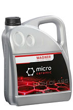

JAPAN NETWORKは、ドイツWAGNER（ワグナー）社の特殊潤滑油・MCオイル・各種添加剤の日本総輸入販売元です。半世紀以上にわたり蓄積された技術力と信頼で、愛車のパフォーマンスを最大限に引き出し、エンジンや機械の寿命を飛躍的に延ばします。

Wagner氏によるクライアント工場へのコンサルティング風景
WAGNER製品はクラシックカーから最新の高性能車、産業機械に至るまで、幅広い分野で信頼を獲得しています。過酷な条件下でも安定した油膜を保持し、燃費向上・ノイズ低減・部品保護を実現します。
エンジンオイル添加剤、トランスミッションオイル、燃料系クリーナー、防錆剤、クラシックカー専用油脂類など、用途に合わせた最適なソリューションをご提供いたします。

ドイツTÜV規格認証取得

MCオイル（小型ボトル缶）

MCオイル（中型ポリ容器）

MCオイル（5L缶/業務用）